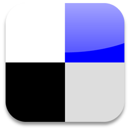

Redes Sociais |
Redes Sociais FamosasMYSPACEO MySpace é uma Rede Social para comunicação online através de uma rede interativa de fotos, blogs e perfis do usuário. Foi criada em 2003 nos Estados Unidos e possui em todo mundo mais de 110 milhões de utilizadores. Inclui um sistema interno de e-mail, fóruns e grupos. Graças à sua popularidade e pelo fato de ter a funcionalidade de MP3, várias bandas com sucesso e cantores registraram-se neste site. A rede social já foi a mais popular do mundo, mas perdeu nos últimos anos para outras redes sociais como Facebook. Muitos renomados artistas de enorme fama internacional, tais como músicos, atores, diretores de cinema, apresentadores, modelos, esportistas, entre outros, têm seu próprio perfil no MySpace. DELICIOUSDelicious surgiu no final de 2003 e foi desenvolvido por Joshua Schachtere. O site permite adicionar e pesquisar bookmarks sobre qualquer assunto. Mais do que um mecanismo de procura para encontrar o que quiser na Web, é antes de tudo uma ferramenta para arquivar e organizar os favoritos. A vantagem é que como os bookmarks não ficam gravados no computador, mas sim em um site da Internet, pode-se aderi-los a partir de qualquer computador e em qualquer lugar. Também tem a vantagem de poder compartilhar os bookmarks com os amigos e visualizar os favoritos públicos de vários membros da comunidade. LinkedIn é uma rede de negócios que surgiu em Dezembro de 2002 e foi fundado por Reid Hoffman, Allen Blue, Jean-Luc Vaillant, Eric Ly, and Konstantin Guericke. Foi oficialmente lançada em Maio de 2003. É principalmente utilizada por profissionais. O Linkedin tem 42 milhões de membros e está presente em 200 países no mundo e representa 170 indústrias. O LinkedIn tem como objetivo aproximar pessoas e profissionais. Qualquer um pode inscrever-se e definir o seu currículo e perfil de interesses, começando, depois, a construir a sua rede a partir do envio de convites a pessoas que conhece pessoal ou profissionalmente e que pode localizar com a ajuda da própria aplicação Web. Quanto mais completo for o perfil, mais fácil será ser "identificado" por contatos já existentes na lista. O serviço mantém critérios de privacidade e pode definir quem vê o seu perfil profissional e pessoal e se quer divulgar o endereço de e-mail. |